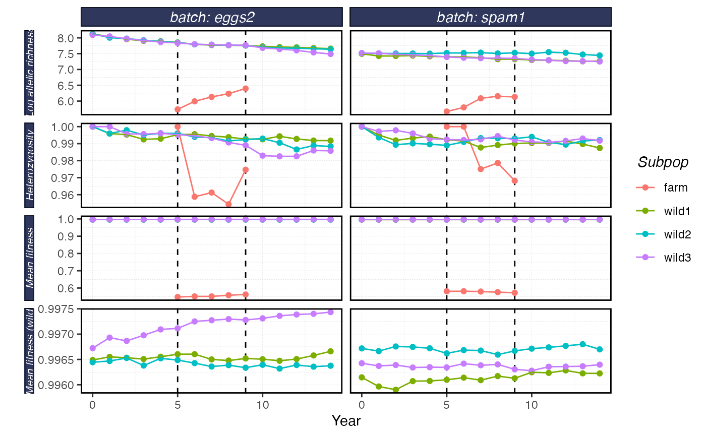
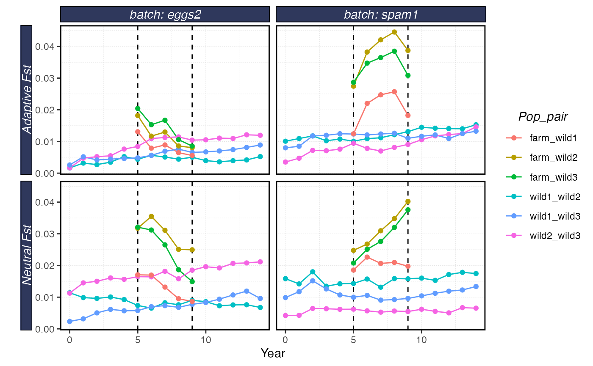

In this example we’ll see how to run two different batches and then load and compare their results.
WARNING: running this vignette will likely take a long time, like 7 hours.
set.seed(42)
library(shellfishrisks) # now load shellfishrisks after installing required python packages
# If you get an error about a missing Python package, restart R completely, and then follow "Installing Python Packages" instructions
shellfishrisks::load_shellfish()
#> shellfishrisks is using Conda environment r-reticulate
# Set options
reps <- 1
coreid <- 1
# All the _years should ideally be set to 50. However, that takes >24 hours to run. For testing, we recommend setting years to 1 to ensure the installation is working properly.
pre_farm_years <- 5
farm_years <- 5
post_farm_years <- 5
# Run shellfishrisk model: this takes about 20min with these
# demonstration settings
shellfishrisk(
batch = "spam1",
reps = reps,
coreid = coreid,
pre_farm_years = pre_farm_years,
farm_years = farm_years,
post_farm_years = post_farm_years,
wild_N_init = 100,
seed_batch_size = 50
)
shellfishrisk(
batch = "eggs2",
reps = reps,
coreid = coreid,
pre_farm_years = pre_farm_years,
farm_years = farm_years,
post_farm_years = post_farm_years,
wild_N_init = 200,
seed_batch_size = 100
)
results <- serve_shellfish(batches = c("spam1","eggs2"),
results_dir = here::here("vignettes","results")) # read the results stored in .txt files into a list object
results$survival
#> # A tibble: 22 × 4
#> # Groups: batch [2]
#> batch age survival survivorship
#> <chr> <dbl> <dbl> <dbl>
#> 1 eggs2 0 0.742 1
#> 2 eggs2 1 0.734 0.742
#> 3 eggs2 2 0.709 0.545
#> 4 eggs2 3 0.730 0.386
#> 5 eggs2 4 0.728 0.282
#> 6 eggs2 5 0.718 0.205
#> 7 eggs2 6 0.714 0.147
#> 8 eggs2 7 0.712 0.105
#> 9 eggs2 8 0.688 0.0749
#> 10 eggs2 9 0.0276 0.0515
#> # … with 12 more rows
plot_shellfish(results, type = "rvars")
plot_shellfish(results, type = "fst")
plot_shellfish(results, type = "popsize")